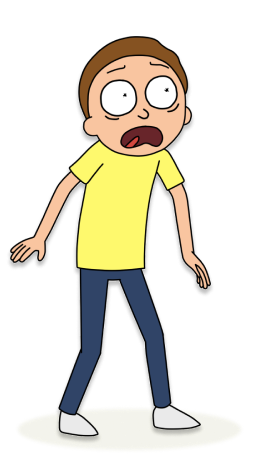

MORTY SMITHY
Morty Smith é um adolescente inseguro que se junta ao seu excêntrico avô, Rick Sanchez, em aventuras interdimensionais. Ele enfrenta perigos, amadurece e demonstra astúcia ao longo da série. Sua relação com Rick é complexa, equilibrando admiração e ressentimento. Morty representa a humanidade comum, enfrentando desafios do multiverso enquanto lida com inseguranças típicas da adolescência.
"Às vezes, as coisas mais difíceis e dolorosas são as que nos fazem crescer. É assim que aprendemos quem realmente somos." - Morty Smith
